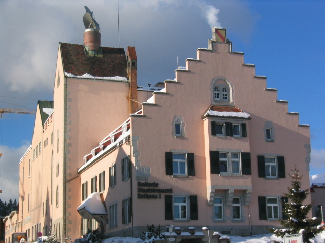
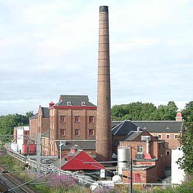
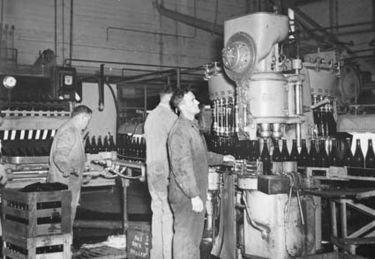

Зміст
Історія
Найраніші свідчення про варіння пива походять з культури Межиріччя, 3500-2900 до н. е. Знахідки свідчать також, що приблизно у цей час пивоварінням займаються і єгиптяни, пізніше шумери та вавилоняни. Від єгиптян пивоваріння переймають євреї. Давні римляни називали пиво «кервізія» (лат. Cervisia) на честь богині рільництва Церери. У 98 році римлянин Тацит у своєму творі «Германія» пише про германів: «Вони пропивають вдень та вночі і їх можна перемогти постачанням п'янких напоїв так само добре як зброєю.» Вважається, що германці самостійно винайшли спосіб варити пиво.
В Європі часів раннього середньовіччя здебільшого монастирі професійно займаються пивоварінням, вони розвивають технологію пивоваріння. На той час пиво вважається напоєм як для дорослих, так і для дітей — на відміну від тогочасної питної води, пиво, внаслідок кип'ятіння, було позбавлене збудників хвороб. Також завдяки великому вмісту калорій, пиво було додатковим продуктом харчування, в Німеччині і сьогодні пиво називають «рідким хлібом» (нім. flüßiges Brot). Тоді ж броварі додавали до пива трави, щоб відганяти злих духів.
Розвиток в Україні
В Україні пивоваріння відоме здавна і довго носило домашній характер в основному для потреб шляхетських господарств.
З другої половині XVI століття на українських землях Речі Посполитої з'являються перші державні броварні. У XVI—XVII століттях у більших містах броварнями здебільшого володіли міщани, створювалися цехи пивоварів або солодовників. Однак у XVII столітті вони занепали, внаслідок заборони торгівлі пивом для міщан воєводами, які в той час розпоряджались орендою права на продажу пива.
У XVII столітті держава монополізує пивоваріння і дозволяє варити пиво лише шляхті, а пізніше також і козацькій старшині та поміщикам
Технологія
Етапи
- Підготовка солоду — солод провіюють і подрібнюють
- Затирання сусла — подрібнений солод змішується з водою. При затиранні крохмаль у зернах розщеплюється в цукру мальтозу і розчинні речовини декстрини. Сусло при цьому набуває солодкуватого смаку. Затор — суміш подрібнених зернопродуктів, призначених для затирання, з водою.
- Фільтрація затору — затор перекачується у фільтр — чан, де відбувається його поділ на неохмелене сусло і дробину. Дробина — нерозчинні залишки ячменю, одержувані в процесі фільтрації затору.
- Кип'ятіння сусла — сусло з додаванням хмелю а також інших інгредієнтів вариться 1-2 години. Під час кип'ятіння хміль розчиняється, білкові речовини коагулюють і випадають в осад. Крім того, випаровуються різні ароматичні компоненти, що несприятливо впливають на смак пива.
- Освітлення сусла — сусло перекачують у гідроциклон (Вірпул) для відділення нерозчинних залишків ячменю і хмелю. Ці частинки, під дією відцентрової сили, збираються по радіусу гідроциклона. Після 20-30 хвилин відстоювання сусло відділяють від нерозчинного залишку — бруху.
- Охолодження і аерація сусла — сусло перекачується в бродильний танк. Протягом перекачування воно охолоджується і насичується киснем, необхідним для харчування дріжджів.
- Бродіння — в отриманий розчин додаються пивні дріжджі, і він зброджується при низьких температурах кілька тижнів. Після доброжування виходить живе пиво. Живе, тому що воно насичене пивними дріжджами (мікроорганізмами), корисними мікро-та макроелементами, в ній дуже високий вміст вітаміну РР. Через це живе пиво завжди має осад на дні.
- Дозрівання пива
- Фільтрація — пиво фільтрується від залишків дріжджів. Фільтроване пиво відрізняється тим, що воно більш стабільне, і може зберігатися до 2-х тижнів. Інколи, цей крок пропускається. У цьому випадку таке пиво називають «Нефільтрованим».
- Пастеризація — деякі сорти пива піддаються пастеризації — нагрівання до температури 68-72 °C, для збільшення терміну зберігання. Таке пиво зберігається до 6-ти місяців.
Затирання солоду
Затирання солоду — особлива наука, для кожного сорту пива воно проводиться зі своїми технологічними нюансами. Спочатку солод перемелюють на млині. Мелений солод не повинен бути однорідним, а складатися як із дрібних, так і з грубих крупинок, а також з тонкого борошна, причому зернові ості повинні залишатися майже недоторканими. Різні сорти пива вимагають різного співвідношення дрібних і великих частинок в подрібненому солоді.
Подрібнений солод і воду змішують у затирочному чані, при цьому відновлюється діяльність ферментів, яка зупинилась після сушіння солоду. Ожилі ферменти починають перетворювати крохмаль, з якого на 70 % складається зерно, в солодовий цукор. Щоб прискорити процес ферментації, солодову кашу (затор) поступово нагрівають до температури оцукрювання — 76 °C. У результаті майже весь крохмаль розщеплюється на цукор та декстрини, які в процесі затирання розчиняються у воді.
Маса що утворилася, перекачується для очищення у велике сито, яке поки залишається закритим знизу. Затертий солод залишають тут на деякий час, щоб на дно осіли нерозчинні частинки, які називають дробиною. Завдяки недоторканим остям дробина не злипається, виступаючи додатковим ситом. Коли сито відкривають, крізь нього і дробину просочується прозоре світле сусло, що являє собою розчин цукристих речовин, що перейшли в нього із солоду.
Кип'ятіння сусла
У варочному котлі сусло нагрівають і доводять до кипіння. На цій стадії в майбутнє пиво додають хміль. Його дозування залежить від багатьох умов: від сорту та якості самого хмелю, від властивостей води і від сорту пива, який збираються варити. Це відповідальне рішення пивовар приймає ґрунтуючись на своєму досвіді та чутті. Наприклад, для Дортмундського експортного зазвичай береться хмелю вдвічі менше, ніж для плзеньського, але точну кількість щоразу визначає майстер.
Варка основного сусла триває від півтори до трьох годин. Під впливом тривалого нагрівання в суслі гинуть всі мікроорганізми і руйнуються природні ферменти, тому в складі сусла вже не відбувається яких-небудь хімічних змін. Лупулін, що міститься у хмелі частково розчиняється в суслі, з'єднуючись з його компонентами і надає пиву характерну гіркоту. Під час варіння вимірюють рівень екстрактивності, чи щільності, основного (початкового) сусла. Роблять це в лабораторії.
Зварене сусло проціджують від залишків хмелю і дають йому відстоятися. При цьому на дно осідають навіть найдрібніші частинки, які не були видалені під час проціджування. За прискореною технологією осад видаляють на центрифузі.
Бродіння
Потім очищене пивне сусло трубами перетікає в бродильний чан. Перш ніж приступити до наступного відповідального етапу і додати в сусло останній важливий інгредієнт — дріжджі, необхідно дочекатися, поки воно охолоне. Для верхового пива необхідна температура сусла від 18 до 22 °C, для низового — від 5 до 10 °C. Існує, проте, нова технологія прискореного зброджування низового пива, якою допускається температура сусла близько 18-20 °C, що дозволяє скоротити тривалість бродіння приблизно вдвічі. Без додавання дріжджів, методом мимовільного бродіння, сьогодні готують тільки деякі сорти пива в Бельгії.
Приблизно через добу після закладки дріжджів на поверхні сусла утворюється товстий шар жовтувато-білої піни. Це показує, що дріжджі вже розпочали свою життєдіяльність, в ході якої солодовий цукор перетворюється на спирт і вуглекислий газ. Ступінь зброджування пива визначається сахарометром.
Після завершення бродіння більшість сортів пива фільтрують через кизельгур (пухка діатомова земля), в результаті чого в пиві не залишається і сліду дріжджів. Проте останнім часом у всьому світі зростає популярність нефільтрованого і непастеризованого пива. Воно дуже корисне, тому що містить живі дріжджові клітини, які до того ж надають пиву додаткові смакові відтінки.
Дозрівання пива
Після цього молоде пиво в принципі готове, хоча пити його ще рано. Таке незріле, або «зелене» пиво повинне ще дозріти, на що йде від декількох тижнів до чотирьох місяців. Доброджування (вторинна ферментація, тихе бродіння) і дозрівання пива відбувається у величезних ємностях з нержавіючої сталі. Пиво типу Lager має витримуватися в спеціальних танках від одного до трьох місяців без доступу кисню. Виняток становлять біле пшеничне пиво і деякі інші верхові сорти, які після закінчення головного бродіння відразу розливають по пляшках, де вони і дозрівають.
При доброжуванні і витримці пива низового шумування дуже важливо ретельно дотримувати температурний режим і підтримувати постійний тиск в бродильних танках. За цим стежить автоматична електронна апаратура, яка не дозволяє даним показникам відхилятися від необхідного рівня. Після дозрівання пиво ще раз очищають і фільтрують, а потім переливають у металеві бочки, кеги, пляшки та алюмінієві банки.
Скляні пляшки ретельно сортують, перевіряють і миють, і лише потім у них розливають пиво і укупорюють під тиском, що запобігає утворенню піни при розливі пива. Наповнені пивом пляшки піддаються пастеризації — повільне нагрівання приблизно до 65 °C. Пастеризація припиняє бродіння і істотно підвищує стійкість пива. Після цього пляшки з пивом охолоджують і надалі, аж до самої реалізації, зберігають і транспортують у темряві і прохолоді.
Див. також
Примітки
- Орфографічний словник [Архівовано 2013-07-13 у Wayback Machine.] Українського мовно-інформаційного фонду НАН України.
- пивоваріння // Словник української мови : в 11 т. — Київ : Наукова думка, 1970—1980.
- броварство // Словник української мови : у 20 т. — К. : Наукова думка, 2010—2020.
- Л. С. Мілоста. Пивоварство // Українська радянська енциклопедія : у 12 т. / гол. ред. М. П. Бажан ; редкол.: О.К. Антонов та ін. — 2-ге вид. — К. : Головна редакція УРЕ, 1974–1985.
- пивоваріння // Великий тлумачний словник сучасної української мови (з дод. і допов.) / уклад.і гол. ред. В. Т.Бусел. — 5-те вид. — К. ; Ірпінь : Перун, 2005. — ISBN 966-569-013-2.
- пивоварство // Словник української мови : в 11 т. — Київ : Наукова думка, 1970—1980.
- пивоварство // Великий тлумачний словник сучасної української мови (з дод. і допов.) / уклад. і гол. ред. В. Т. Бусел. — 5-те вид. — К. ; Ірпінь : Перун, 2005. — ISBN 966-569-013-2.
- Броварство // Енциклопедія українознавства : Словникова частина : [в 11 т.] / Наукове товариство імені Шевченка ; гол. ред. проф., д-р Володимир Кубійович. — Париж — Нью-Йорк : Молоде життя, 1955. — Кн. 2, [т. 1] : А — Головна Руська Рада.
- броварство // Великий тлумачний словник сучасної української мови (з дод. і допов.) / уклад. і гол. ред. В. Т. Бусел. — 5-те вид. — К. ; Ірпінь : Перун, 2005. — ISBN 966-569-013-2.
- Stuttgarter Zeitung Nr.164, 19.липня 2007, за даними дослідження ринку Barth-Haas-Gruppe
- Stuttgarter Zeitung Nr.164, 19 липня 2007, за даними дослідження ринку Barth-Haas-Gruppe
Джерела
- Гайдай Л. Історія України в особах, термінах, назвах і поняттях. — Луцьк: Вежа, 2000
- Радянська енциклопедія історії України . — К. : Головна редакція УРЕ , 1969. — Т. 1 : Абазин — державець. — 562 с.
Література
- Пивоваріння. Терміни та визначення понять. — На заміну ДСТУ 3139-95 ; Чинний від 2015-11-01. — Київ: УкрНДНЦ, 2015. — III, 27 с. — (Національний стандарт України). — Бібліогр.: с. 26.
- Технологія виробництва пива: навч. посібник для студ. спец. 27.04 «Технологія бродильних виробництв і виноробство» / П. В. Колотуша ; Український держ. ун-т харчових технологій. — К. : [б.в.], 1995. — 228 с.
- Технологія пива: навч. посібник для студ. усіх форм навч. напряму «Харчова технологія та інженерія» / Л. А. Данилова, П. О. Некрасов ; Національний технічний ун-т «Харківський політехнічний ін-т». — Х. : НТУ «ХПІ», 2006. — 224 с.: рис., табл. — Бібліогр.: с. 197.
- Технологія солоду та пива: підручник для студ. вищих закл. освіти, що навч. за спец. «Технологія бродильних виробництв і виноробства» / В. А. Домарецький. — К. : Урожай, 1999. — 542 с.: рис.
- Хміль та пиво в Україні з давнини до сьогодення / М. Ю. Костриця, Й. Г. Рейтман ; ред. Й. Г. Рейтман ; Ін-т сіл. госп-ва Полісся. — Житомир: [б.в.], 1997. — 238 с.